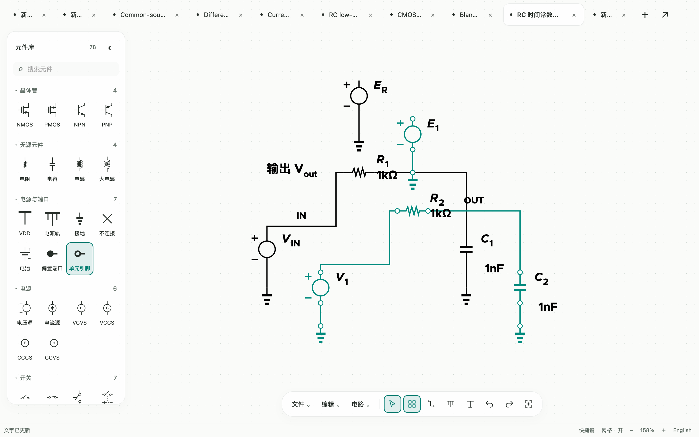

用准星，落在准确的位置
文字、矩形、直线与标注以十字准星定位。按 P 放置单元引脚，网络名称由你决定。
电路绘图 / 本地仿真 / 技术插图
从一张空白画布开始，放置元件、整理信号路径，
再用本地 ngspice 验证电路。留给思考的空间，多一点。

顺手，也准确
文字、矩形、直线与标注以十字准星定位。按 P 放置单元引脚，网络名称由你决定。
选区默认复制为 SVG 矢量图。在 Circuit Studio 内粘贴，仍是可以继续修改的元件与连线。
本地运行工作点、交流、直流扫描与瞬态分析。工程、模型、波形和导出都在自己的电脑上。
macOS 26 或以上。通用安装包同时包含 Apple Silicon（arm64）和 Intel（x86_64）版本。
支持 SVG 矢量图与 PNG。默认复制选区使用 SVG；应用内复制粘贴同时保留可编辑电路数据。
官网版会检查本站发布的更新，下载后验证签名再安装。也可以在应用菜单中手动检查更新。